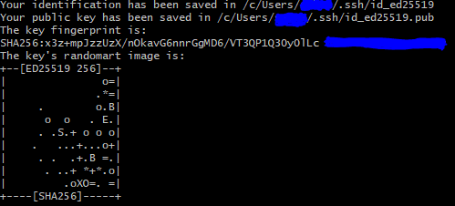

Git 명령어 상세
0. 초기 설정
SSH 키 생성 및 GitHub에의 등록
출처: https://www.lainyzine.com/ko/article/creating-ssh-key-for-github/
- Git Bash (Windows) 또는 터미널(Linux/Mac) 실행
cd ~/.sshlsid_ed25519와id_ed25519.pub가 보이지 않으면 아래의 과정을 거쳐야 한다.- 예전 Git 유저의 경우
id_rsa와id_rsa.pub가 보일 수도 있는데, 이 경우에는 4. ~ 7. 과정을 생략해도 좋다.
ssh-keygen -t ed25519 -C "[your_email@example.com]"[your_email@example.com]부분은 자신의 이메일로 대체해서 적는다.- ed25519 방식이 동작하지 않는 경우 대신 아래 명령을 입력한다.
ssh-keygen -t rsa -b 4096 -C "[your_email@example.com]"
- 어느 위치에 저장할 것인지 물어본다.
- 그냥 enter 키를 입력하면 기본값으로 설정되며 넘어간다.
- 비밀번호(passphrase)를 입력하라고 물어본다.
- 그냥 enter 키를 입력하면 비밀번호 없이 사용 가능하지만, 가급적이면 비밀번호를 설정하는 것을 추천한다.
- 한 번 더 비밀번호를 입력하라고 물어본다.
- 같은 비밀번호를 입력하면 된다.
- 앞에서 enter로 넘어갔다면 또 enter를 누르면 된다.
- 이제 아래 사진처럼 출력되면서
~/.ssh/폴더 안에 SSH 키가 생성되었다.- 
- Windows의 경우 기본값 위치는
C:\Users\[계정 이름]\.ssh\에 있을 것이다. - ed25519 방식으로 생성한 경우 두 개의 파일
id_ed25519와id_ed25519.pub가 생성된다. - RSA 방식으로 생성한 경우 두 개의 파일
id_rsa와id_rsa.pub가 생성된다. - 주의:
id_ed25519또는id_rsa의 내용은 절대 다른 사람에게 공개되어서는 안 된다!- 이것은 private key라고 부른다.
id_ed25519.pub또는id_rsa.pub의 내용은 다른 사람들에게 공개되어도 상관 없다.- 이것은 public key라고 부른다.
id_ed25519.pub의 내용물을 복사한다.- Windows에서는
clip < ~/.ssh/id_ed25519.pub실행 - Mac에서는
pbcopy < ~/.ssh/id_ed25519.pub실행
- Windows에서는
- GitHub에 접속하여 Sign in 한다.
- 아래 사진처럼 상단 오른쪽에 있는 자신의 초상화를 클릭하고 "Settings"를 클릭한다.
- 아래 사진처럼 "SSH and GPG keys" 메뉴로 들어간다.
- 오른쪽 위에 있는 초록색 "New SSH key" 버튼을 클릭한다.
- 아래 사진처럼 "Title"에는 자신이 알아볼 수 있도록 제목을 넣고, "Key"에는 위에서 복사한
id_ed25519.pub의 내용물을 붙여넣는다.
- 필자는 개인적으로 "Title"에 컴퓨터 종류를 적는다.
- 아래 초록색 "Add SSH key" 버튼을 클릭한다.
- 이제 이 컴퓨터에서 SSH를 통한 GitHub 접근이 가능하다!